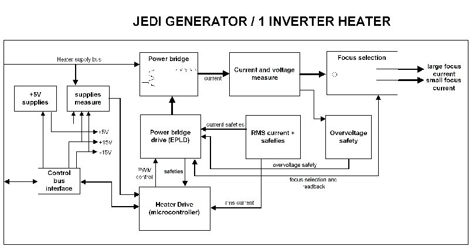

GEMS Proprietary Class: A
Direction 5117807-800, Rev# A
GEMS Proprietary Class: A |
The heater function involves the following sub-assemblies:
Heater board
HV tank heater transformers
Tube filaments
The main features of the function are :
One type of heater board is available :
For applications which do not have a fast exposure switch from one filament to the other, a 1 inverter heater board . In this case, 1 inverter alternatively powers the two filaments.
For applications which need fast exposure switch from one filament to another (This requires to prelight one filament when the other is used) , a 2 heaters board is used in parallel.
Each heater board is able to drive all kinds of filaments up to either 5.5A or 6.5A depending on the filament type, and 10A in boost mode.
Heater functions include filament protection against overheating and filament open detection.
Illustration 1: JEDI Generator / 1-Inverter Heater

| NOTE: | For a larger version of the above illustration, click on the pdf icon below: |
Media File 1: JEDI Generator / 1-Inverter Heater

The heater inverter is an hyper-resonant half bridge inverter fed by a 160VDC voltage provided by the Low voltage power supply function or the battery voltage (100VDC-200VDC) in case of a battery powered generator.
The resonant frequency is fixed at 20KHz, and the working frequency range is between 20KHz (maximum power) and 60KHz (minimum power around 1.5A in the filament).
Current waveform in the inverter is approximately a sine wave.
The inverter working frequency range makes it completely inaudible.
The filaments being at the cathode voltage, an isolation transformer for each filament is located in the HV Tank.
These transformers present a 1:1.25 ratio leading to a RMS current in the heater inverter 1.25 times the filament current.
The inverter is switched to one of the two filaments by the focus selection relay.
The input voltage being referenced to ground, no isolation is required to drive the MOS switches
The heater drive mainly relies on a 16 bits, 20MHz, 32Kbyte memory microcontroller.
It is in charge of the main functions:
Retrieve, at power-up, the heater database containing all the data required to drive the filaments (through the CAN serial line of the Control Bus):
filament max currents
boost duration
inverter current safety levels
Receive the commands (ex: go to filament=5A on small focus), and update the heater state accordingly
Measure the inverter current and regulate the inverter
Simulate the filament temperature and protect it against overheating
Send the feedbacks ( ex : filament=5A, errors ) to the main software, and put the heater in a safe state in case of error
Read the +15V, -15V ( Control bus voltages ), heater supply bus and inform the main software
The microcontroller commands the power bridge drive through an EPLD in charge of:
Demultiplexing the drive frequency to command the 2 MOS
Stop the inverter in case of safeties which require a fast action: overcurrent, overvoltage (=filament open detection), inverter short circuit, mains drop, tube temperature reaches 70 degrees
Drive the focus selection relay and read its position
The filament current accuracy and reproducibility must be excellent (less than several 1/1000) to ensure a good mA accuracy and reproducibility. Filament current being not measurable (because at high voltage), the heater inverter current (and not the filament current) is regulated.
The heater inverter current is measured and converted to RMS. The RMS current is measured by the microcontroller compared to the reference and the error leads to an adjustment of the inverter drive frequency.
At the same time, the microcontroller tracks the filament temperature based on the filament current applied and prevents overheating.